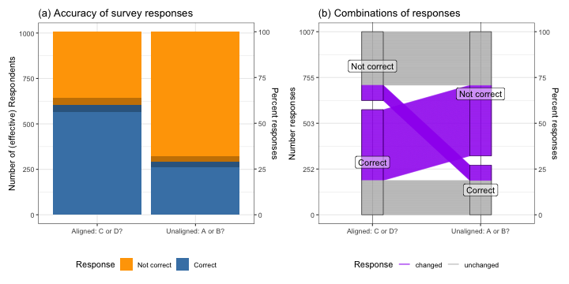
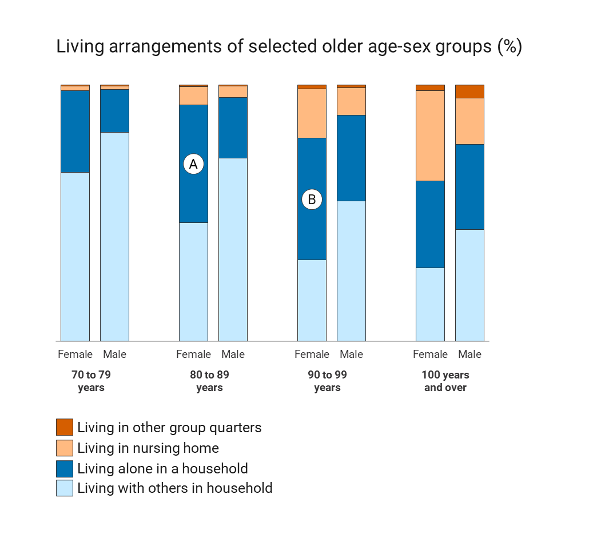
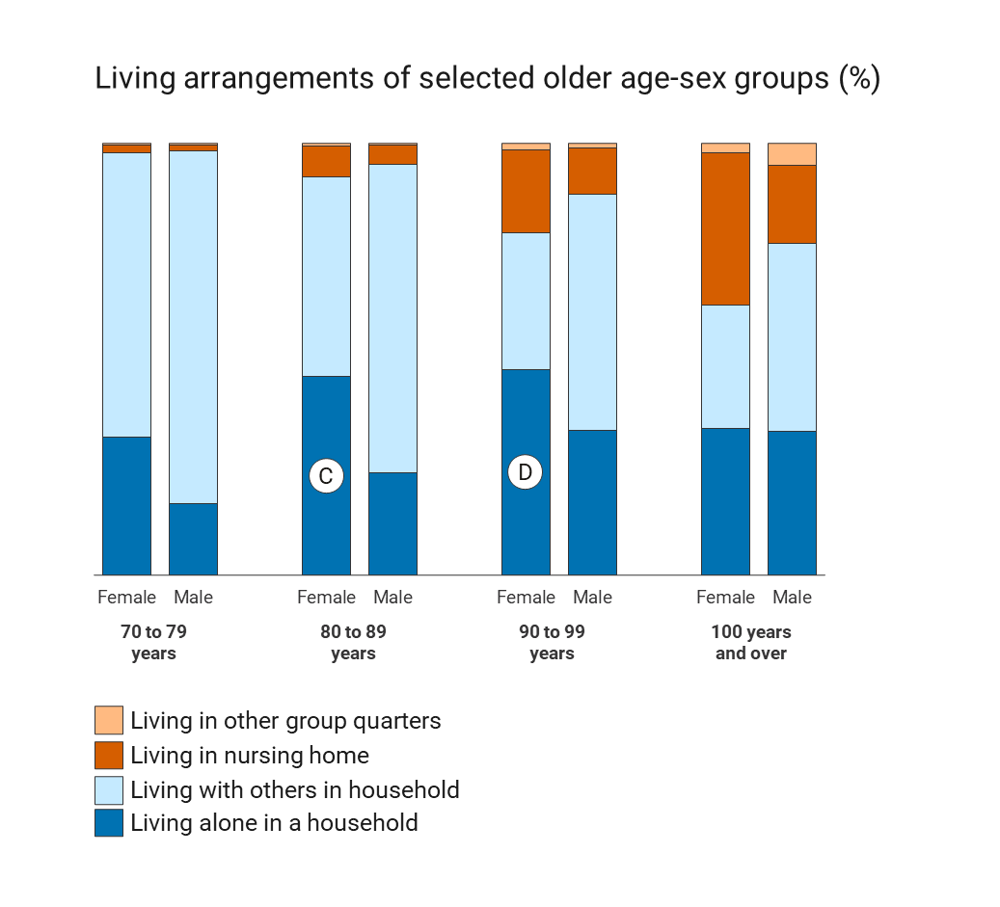
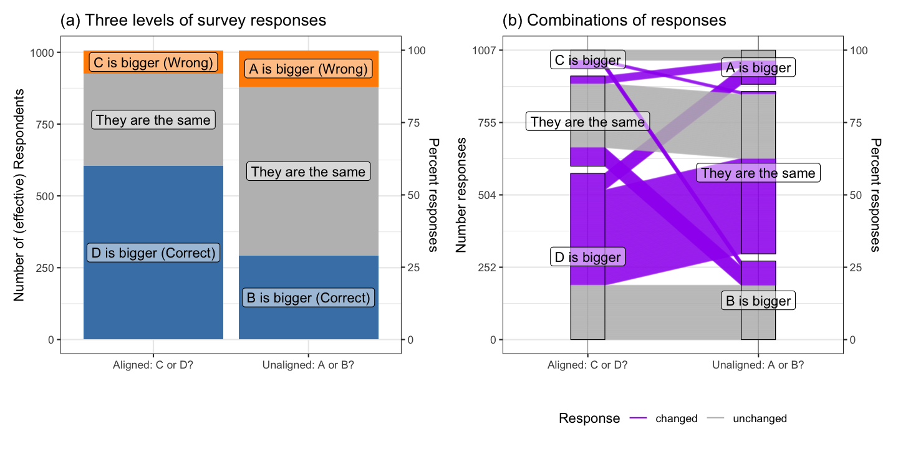

Supplement: Analysis and code for ‘Testing Perceptual Accuracy in Charts using Surveys’
1 Survey rounds
The data for this paper were collected in several rounds as part of the NORC Omnibus.
| Name | Date | # Participants | effective sample size | Sum of weights \(\sum_i w_i\) |
|---|---|---|---|---|
| Round 1 | April 2022 | 933 | 521.1 | 934.9 |
| Round 2 | May 2022 | 953 | 485.7 | 953.4 |
| Round 6 | Sep 2022 | 450 [Split] | 254.9 | 462.9 |
| Round 7 | Oct 2022 | 984 | 524.5 | 984 |
We are using a strategy of combining (rather than cumulating) surveys \(S_1\) and \(S_2\), as described in O’Muircheartaigh and Pedlow (2002), by multiplying weights in \(S_1\) and \(S_2\) by \(\lambda\) and \(1 - \lambda\), respectively. \[ \lambda = \frac{n_1/d_1}{n_1/d_1 + n_2/d_2}, \] where \(n_1\) and \(n_2\) are the nominal sample sizes and \(d_1\) and \(d_2\) are the design effects for the estimators. Instead of using design effects itself, \(d_1\) and \(d_2\) are estimated as \[ d_1 = 1 + CV(w_i \in S_1)^2 \ \ \ \text{ and } \ \ \ d_2 = 1 + CV(w_i \in S_2)^2 \] \(CV\) is the coefficient of variation of the weights within each sample, and is estimated as Kish (1965)
\[ CV(w \in S) = \frac{\widehat{Var(w)}}{\bar{w}^2}. \]
O’Muircheartaigh and Pedlow (2002) estimate \(\lambda\) separately for any combination of race/ethnicity by sex. We will use that strategy whenever we include demographic variables in the analysis, otherwise we will use a single adjustment for the weights.
All calculations are done in R (R Core Team 2022) using the survey package (Lumley 2004) version 4.0 (Lumley 2020) based on Lumley (2010).
2 Model 1: Comparing Aligned and Unaligned Tiles in Vertical Stacked Barcharts
The data used for this is a combination of rounds 1 and 2, with \(\lambda\) = 0.518 for an effective sample size of 1007.1. Figure 1 shows the two stacked barcharts shown to all panelists.


2.1 Binary response
Defining an accurate response as “B is bigger” in the chart of unaligned tiles, and “D is bigger” in the aligned case, while calling the other two responses as incorrect, leads to the data shown in Figure 2(a): we see that more than twice the number of responses is accurate, when the tiles are aligned along the same axis. Because each particpant was shown both versions of the chart, we can use a paired \(t\)-test to compare mean accuracy between the two charts. The difference in mean accuracy is 0.31. This difference is highly significant (\(t\) statistic: 15.94, df: 1656, \(p\)-value: < 2.2e-16).
This test is equivalent to a logistic regression with response \(Y_{ij}\), the response of participant \(i\) to question \(Q_j\) \(j = 1/2\) is correct (=1) or incorrect (=0): \[ \text{logit } P \left(Y = 1 \mid Q_j \right) = \alpha + \beta_j, \] We assume that \(Y \mid Q_j\) has a Bernoulli distribution with success probability \(p_j\), \(j = 1, 2\). For the purpose of estimability, we will assume that \(\beta_1 = 0\), i.e. \(\text{logit} (p_1) = \alpha\) and \(\beta_2 = \text{logit}(p_2) - \text{logit}(p_1)\). The odds of an accurate answer with aligned bars is therefore exp (1.3) = 3.7 times higher than for the unaligned bars of Question 1.
| Estimates for Model 1 | ||||
| accuracy of responses for unaligned (Question 1) and aligned bars (Question 2) | ||||
| term | estimate | SE | t-statistic | p-value |
|---|---|---|---|---|
| $$\widehat{\alpha}$$ | −0.89 | 0.07 | −13.0 | < 0.0001 |
| $$\widehat{\beta}_2$$ | 1.30 | 0.09 | 14.9 | < 0.0001 |
2.2 Ordinal response
When moving beyond the binary accuracy measure of the response and using all three levels of the response as dependent variable, we see that by far the largest change in responses comes from a change from ‘they are the same’ to the (perceptually) correct response of ‘D is bigger’ when the tiles are aligned along the same axis for a comparison (see Figure 3). Even though the number of wrong responses (orange) is only slightly different (0.045) between aligned and unaligned comparisons, it is still highly significant (\(t\) statistic: 3.9, df: 1656, \(p\)-value: < 2.2e-16).

| level | log odds | SE | t-statistic | p-value | percent change |
|---|---|---|---|---|---|
| correct | same or wrong | -1.3 | 0.09 | -14.9 | 0e+00 | -31.0 |
| correct or same | wrong | -0.5 | 0.13 | -3.8 | 2e-04 | -4.5 |
2.3 How certain are participants?


Using linear scores for the response of Certainty, with not certain at all assigned a score of 1 and extremely certain assigned a score of 5, we can estimate the effects of task and correctness on certainty by using a cell-means model of the form: \[
Y_{k} = \mu_{ij(k)} + \epsilon_{k},
\] where \(k = 1, ..., N\), \(\mu_{ij(k)}\) is average certainty (measured on a scale from 1 to 5) of the four combinations of task and correctness, where \(i = 1, 2\) encodes unaligned/aligned, and \(j=1,2\) encodes wrong, correct, respectively. We also assume that errors are normally distributed, i.e. \(\epsilon_k \stackrel{i.i.d}{\sim} N(0, \sigma^2)\) for all \(k = 1, ..., N\). What we find, is that we see the lowest score of certainty for correct responses to the unaligned comparison task. For aligned comparisons, the correctness of the response does not matter for the associated certainty.
| Estimates for Model 2.3 | ||||
| certainty of responses by task and correctness of response | ||||
| term | estimate | SE | t-statistic | p-value |
|---|---|---|---|---|
| $$\widehat{\mu}_{11}$$ | 3.34 | 0.04 | 84.5 | < 0.0001 |
| $$\widehat{\mu}_{21}$$ | 3.61 | 0.05 | 73.0 | < 0.0001 |
| $$\widehat{\mu}_{12}$$ | 3.01 | 0.06 | 52.4 | < 0.0001 |
| $$\widehat{\mu}_{22}$$ | 3.56 | 0.04 | 85.4 | < 0.0001 |
Warning: Combining variables of class <logical> and <character> was deprecated in
ggplot2 3.4.0.
ℹ Please ensure your variables are compatible before plotting (location:
`combine_vars()`)
3 Model 2: Aligned and unaligned comparisons between facetted barcharts and facetted piecharts
A total of three different charts were shown to (a part) of the panelists from Round 6 and all panelists of Round 7. The four labelled pieces A, B, C, and D correspond to values 46, 47.6, 45.2, and 44.4, respectively, i.e underlying each evaluation is the order D < C < A < B.


3.1 Binary and Ordinal Correctness as Response
Figure 6 gives an overview of all responses to size assessments of the marked tiles. The panels are ordered according to the difference in signal and hypothesized difficulty from easiest (left) to hardest (right) comparison. We see, that in general the percentage of correct responses decreases from left to right. Design does not seem to matter for easy comparisons (BD, BC) or the hard comparison (CD). The three comparisons in the middle show interesting patterns, highlighted in the reordered Figure 7. Colored letters below and above the bars encode significances between pairs of bars of the same color: two proportions are significantly different at a 5% significance level, if they do not have a letter in common (Piepho 2004). Significances are adjusted for multiple comparisons as implemented in the multcomp package (Hothorn et al. 2008).

For the facetteed barcharts, there is an abrupt drop in accuracy of responses between ‘easy’ and ‘hard’ comparisons. (HH: All of these comparisons could be affected by the context of their light blue neighbors. ‘B’ is bigger than its light blue neighbor, and also the overall biggest. ‘A’ is only a bit smaller than ‘B’, but quite a bit smaller than the light blue bar next to it. This seems to make comparisons with A harder.) For pie charts the accuracy in responses is reacting a lot more gentle to the increasing difficulty. There is no apparent effect in pie charts due to alignment. However, all comparisons are very close to 50% - the intrinsic reference lines (Lipkus and Hollands 1999) in pie charts (at 180 degrees, and to a lesser degree at 90 degree angles) might be helping with this particular set of comparisons.

3.2 How certain are participants?
4 Model X: Comparing Aligned and Unaligned Elements Facets
The survey setup and all stimuli are shown in Table 2. A total of 984 panelists (Effective sample size: 524.5) were shown four sets of facetted charts each. For questions 3 and 4, the panel was split into two (roughly) halves. One set of panelists was shown the floating wedges, while the other half was shown the framed wedges on the right.
For each chart, panelists were asked to compare all marked tiles against each other.
| Everybody: | Question 1: Facetted Pie, unaligned | Question 2: Facetted Pie, aligned |
|
|
|
| Split Sample | Effective sample size: 257.3 | Effective sample size: 267.7 |
| Question 3: unaligned | Floating pie wedges | Framed pie wedges |
 |
 |
|
| Question 4: aligned |  |
 |
For a comparison of wedges marked X and Y, there were three possible options for the response: (1) X is bigger, (2) Y is bigger or (3) They are the same.
The four labelled pieces A, B, C, and D correspond to values 46, 47.6, 45.2, and 44.4, respectively, i.e underlying each evaluation is the order D < C < A < B. Nominally, the differences between the size of the marked elements can be expressed as multiples in \(\delta = 0.8\), with \(B = A + 2\delta = C + 3 \delta = D + 4 \delta\). A difference of \(\delta = 0.8\) corresponds to about a \(3^\degree\) difference for the angle of a wedge. We would expect that an increase in the difference in the values increases the accuracy in the responses. This is mitigated by the distance between wedges: more distance (should) lead to a decrease in accuracy. Similarly, if pieces have an axis or a line of reference in common, we would expect an increase in accuracy.
There are different possible strategies for evaluating the size of a wedge in a pie chart. Panelists can use the angle of the wedge (or a suitable derivative of it, such as the complementary angle or the remainder to 180 degrees), its area (as part of the circle or some derivative) or the arc length of the wedge. Studies by Kosara and Skau (2016) and Kosara (2019) show that the area of a piece in a pie chart is the primary evaluation method.

Figure 8 shows a summary of panelists’ accuracy of their responses. The panels are sorted according to the level of difficulty of a comparison as hypothesized above from lowest difficulty (BD) to highest (CD). We see that the percentage of correct responses follows (on average) this hypothesized order. Using the comparison of A versus B as the baseline, we see from ?@tbl-model7, that comparisons BC and BD have a significantly higher accuracy (in that order), while the accuracy of comparisons AD, AC, and CD are significantly worse (HH: should we do pairwise comparisons for that?). Comparisons involving aligned pieces have (with two exceptions) a higher rate of accuracy than a comparison of the same-size, unaliged pieces.
Generally, framed pieces have the highest rate of accuracy, while the comparisons within the full context of the pie chart fared the worst, both in the percent of ‘the same’ responses as well as in identifying the smaller piece as the bigger.
Using a frame as an additional visual cue was shown by Cleveland and McGill (1984) to significantly improve the accuracy of perceiving the height of bars (cf. Fig. 12, p. 538; difference between ‘length’ and ‘position along an unaligned identical axis’). Here, we find that framed pieces show the same trend in accuracy, however, this effect fails to become significant in the model (tasknameFloat).
The fact that the full pie chart sees the lowest accuracy rates is similar to the finding in Talbot et al. (2014) for bars. Talbot et al. (2014) report that other bars serve as distractors when comparing two other bars.
| Estimates for Model 2 | ||||
| accuracy of responses across conditions of Round 7 | ||||
| term | estimate | SE | t-statistic | p-value |
|---|---|---|---|---|
| (Intercept) | 0.17 | 0.10 | 1.7 | 0.0837 |
| labelledAC | −0.85 | 0.08 | −10.8 | < 0.0001 |
| labelledAD | −0.48 | 0.07 | −6.8 | < 0.0001 |
| labelledBC | 0.15 | 0.05 | 2.8 | 0.0059 |
| labelledBD | 0.26 | 0.05 | 4.8 | < 0.0001 |
| labelledCD | −1.23 | 0.08 | −14.9 | < 0.0001 |
| conceptUn- | −0.24 | 0.05 | −5.1 | < 0.0001 |
| tasknameFloat | −0.10 | 0.12 | −0.9 | 0.3894 |
| tasknamePie | −0.33 | 0.08 | −4.3 | < 0.0001 |
References
Cleveland, W. S., and McGill, R. (1984), “Graphical perception: Theory, experimentation, and application to the development of graphical methods,” Journal of the American Statistical Association, 79, 531–554. https://doi.org/10.1080/01621459.1984.10478080.
Hothorn, T., Bretz, F., and Westfall, P. (2008), “Simultaneous Inference in General Parametric Models,” Biometrical Journal, 50, 346–363. https://doi.org/10.1002/bimj.200810425.
Kish, L. (1965), Survey Sampling, Wiley.
Kosara, R. (2019), “Evidence for Area as the Primary Visual Cue in Pie Charts,” in 2019 IEEE Visualization Conference (VIS), pp. 101–105. https://doi.org/10.1109/VISUAL.2019.8933547.
Kosara, R., and Skau, D. (2016), “Judgment Error in Pie Chart Variations,” EuroVis 2016 - Short Papers, The Eurographics Association, 5 pages. https://doi.org/10.2312/EUROVISSHORT.20161167.
Lipkus, I. M., and Hollands, J. G. (1999), “The Visual Communication of Risk,” JNCI Monographs, 1999, 149–163. https://doi.org/10.1093/oxfordjournals.jncimonographs.a024191.
Lumley, T. (2004), “Analysis of complex survey samples,” Journal of Statistical Software, 9, 1–19.
Lumley, T. (2010), Complex surveys: A guide to analysis using R: A guide to analysis using R, John Wiley and Sons.
Lumley, T. (2020), “Survey: Analysis of complex survey samples.”
O’Muircheartaigh, C., and Pedlow, S. (2002), “Combining Samples Vs. Cumulating Cases: A Comparison of Two Weighting Strategies in NLSY97,” in ASA Proceedings of the Joint Statistical Meetings, pp. 2557–2562.
Piepho, H.-P. (2004), “An Algorithm for a Letter-Based Representation of All-Pairwise Comparisons,” Journal of Computational and Graphical Statistics, Taylor & Francis, 13, 456–466. https://doi.org/10.1198/1061860043515.
R Core Team (2022), R: A language and environment for statistical computing, Manual, Vienna, Austria: R Foundation for Statistical Computing.
Talbot, J., Setlur, V., and Anand, A. (2014), “Four Experiments on the Perception of Bar Charts,” IEEE Transactions on Visualization and Computer Graphics, 20, 2152–2160. https://doi.org/10.1109/TVCG.2014.2346320.